Pointer This activates the pointer.
Pointer This activates the pointer.
|
|
|---|
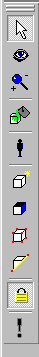
Pointer This activates the pointer.
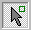Pointer Mode2 When clicked twice this activates the pointer and allows you to highlight only brushes.
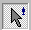Pointer Mode3 When clicked three times this activates the pointer and allows you to highlight only entities.
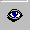Camera Activates the 3D view camera.
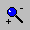Zoom Activates the zoom tool.
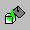Paint Object Paints the current selection (whole brush or surface) with the current texture.
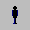Entity This allows you to select and drop entities into current map.
 Brush Creation This allows you to choose and drop a brush type into the map.
Brush Creation This allows you to choose and drop a brush type into the map.
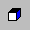Face Properties This allows you to adjust the texture and surface properties of a selected brush.
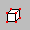Vertex Manipulation This allows you to manipulate the verticies of a selected brush.
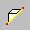Clip Split This will clip or split a brush.
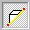Clip Split Mode1 When clicked once this will clip a brush.
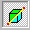Clip Split Mode2 When clicked again this will split a brush.
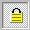Texture Lock This will lock the texture orientation.
Build Map This will start the map compiler.